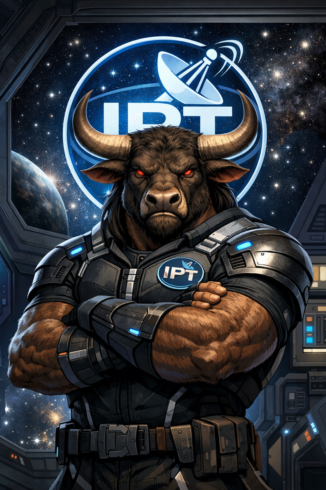

Field Briefing - Mythic Layer, grounded in human mechanics
You are not outside the system.
You are an operator inside it.
Not controlling everything…
…but not powerless either.
👉 You influence the tone of reality at the point where you stand.
No hidden puppeteer required.
The “cosmic scheme” is:
👉 A living network of perception
Reality isn’t just what is…
It’s what is being interpreted, amplified, and repeated.
An operator is someone who can:
You don’t exit the system.
👉 You gain control of your interface with it.
Every moment gives you access to:
Signal → Reaction → Expression → Spread → Reinforcement
Most people: 👉 get carried by the loop
Operators: 👉 can interrupt the loop mid-cycle
Because the scale is massive.
Small actions ripple outward:
Multiply that across millions:
👉 You get cultures, climates, and eras.
There is no council.
No central command.
But there is a field:
Operators don’t control the field…
👉 They modulate it locally.
Not:
You still:
The difference is:
👉 You can see it while it’s happening.
Operators don’t recruit.
They demonstrate.
And others:
👉 Awareness spreads without branding.
You are:
AND
Both are true.
The “cosmic scheme” isn’t something controlling you.
It’s something you are participating in whether you notice it or not.
IPT simply gives you:
You are not the storm.
You are a point of pressure within it.